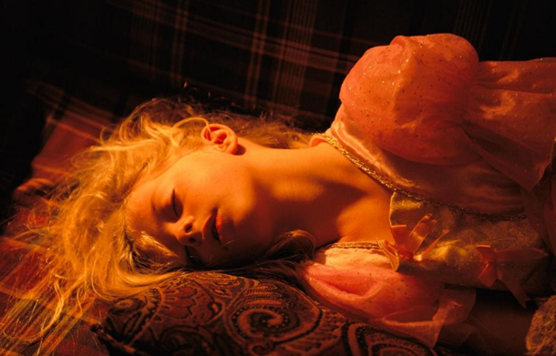
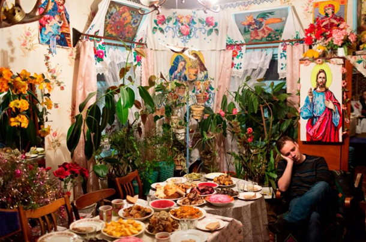
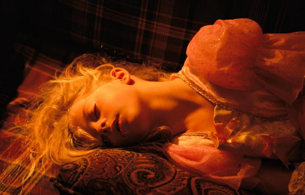
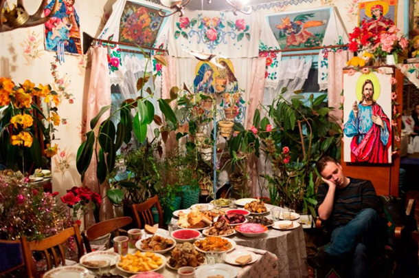

❮
❯


❮
❯
Видання National Geographic показало найкращі фото, на яких продемонстровані люди, котрі сплять.
Майже всі представники тваринного світу мають свій особливий спосіб сну.
Люди також мають низку звичок, які різняться, залежно від місця для сну, культури і країни проживання, зазначає видання.
Автори фотографій показали, що абсолютно не має значення, де саме заснула людина. Головне, що їй вдалося розслабитися і забути на цей час про свої турботи.